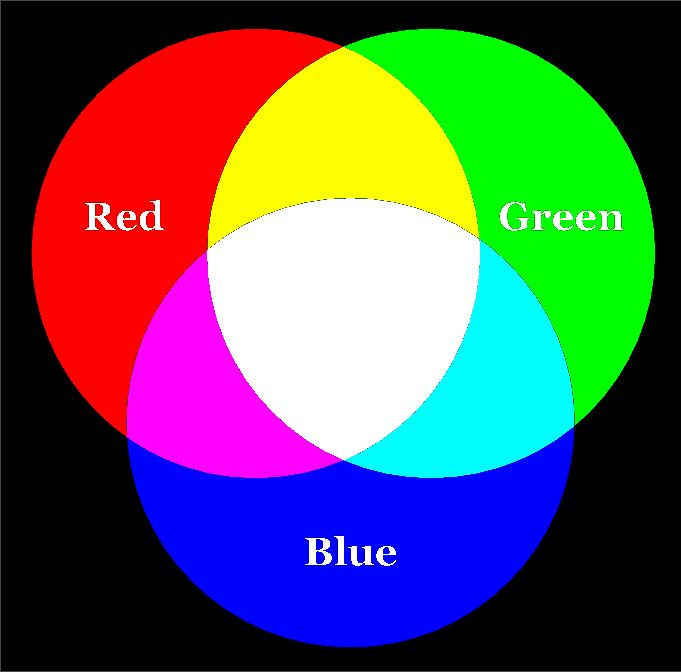
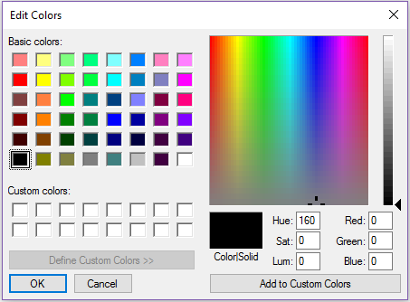
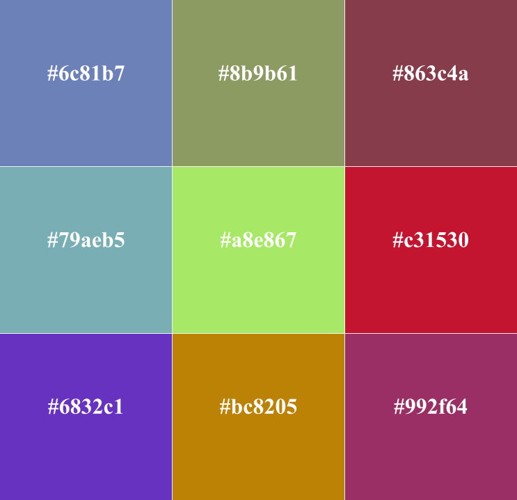

About RGB
The RGB or additive color model combines red light, green light and blue light at various intensities to produce other colors (Felke-Morris, 2017). With these intensities ranging from 0 to 255 in decimal notation, or 00 to FF in hexadecimal, exactly 2563 or 16,777,216 colors can be made from this color model. The absence of all three of these primary colors results in black; the combination of all three of these at full intensity makes white. Equal intensities of each create a neutral in the form of a perfect shade of gray.

Computers use the RGB color model to display images. Examination of any color picker application in any operating system, such as the one from numerous incarnations of Windows pictured above, provides a visual and interactive exhibit of color and what intensities of each primary comprise that color.

Color gamut analysis
The analysis section of this website is made up of five pages, and shows what colors are available for use based on how many levels of intensity are available for each primary color. This section uses the terms 'gamut' and 'palette' to refer to all the resulting available colors in each example. "Base #" refers to how many levels are available for each primary, including the absence of that primary. These intensities range from completely off to completely on, and intermediate intensities are equidistant from one another with at most one (1) decimal or hexadecimal unit of deviation from rounding up.
Analysis--binary color gamut
Reference
Felke-Morris, T. (2017). Web development & design foundations with HTML5 8th edition. United States of America: Pearson.